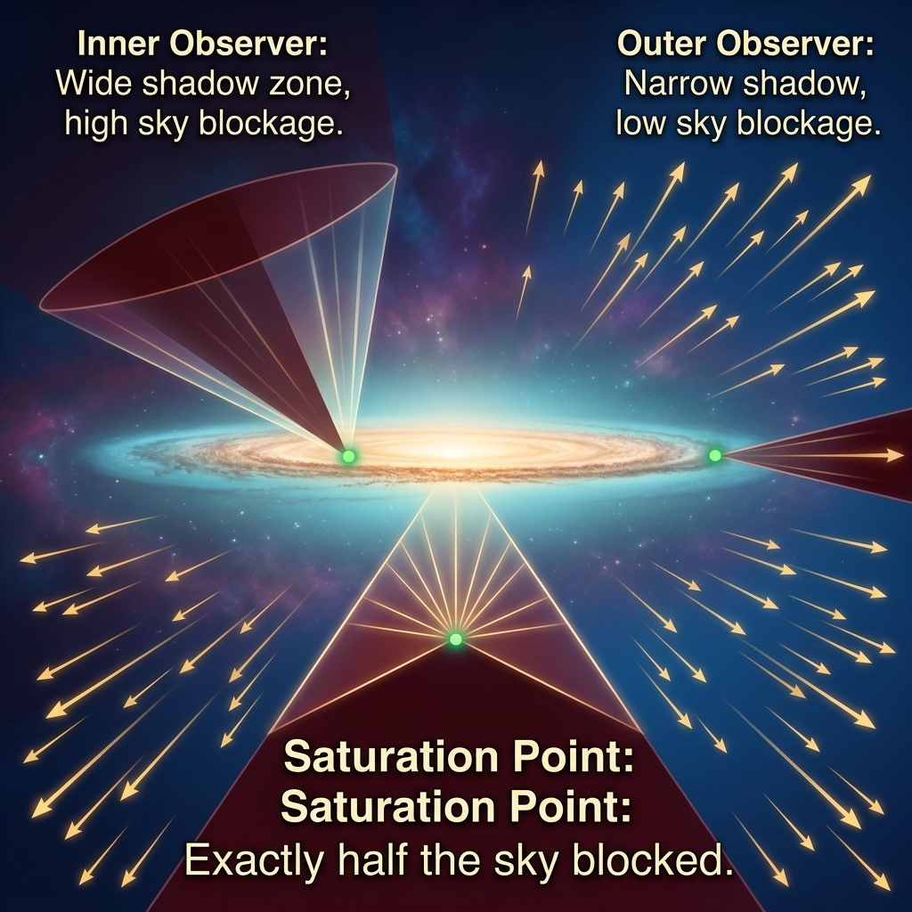
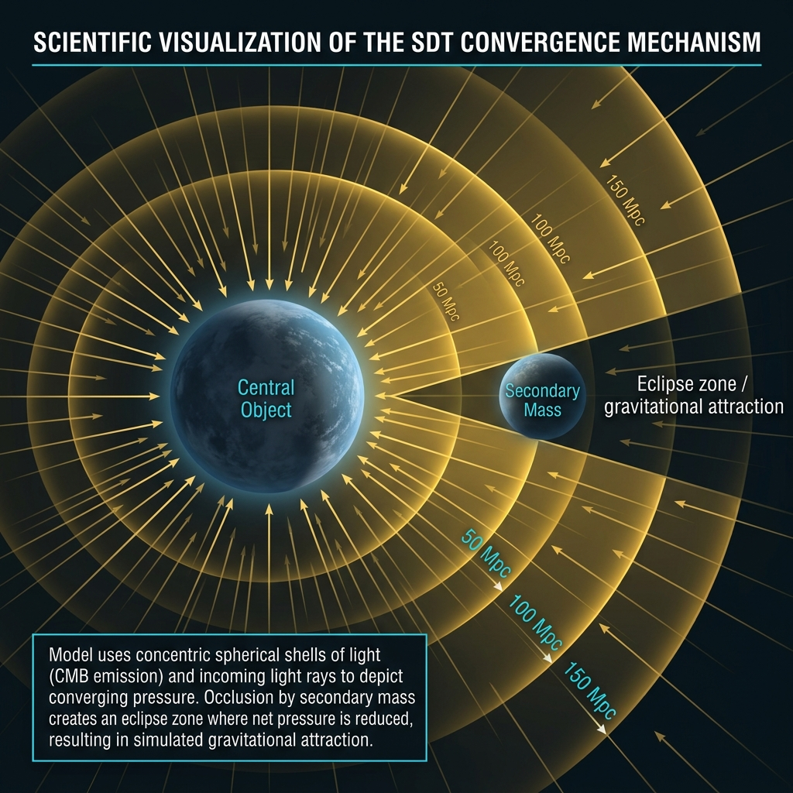
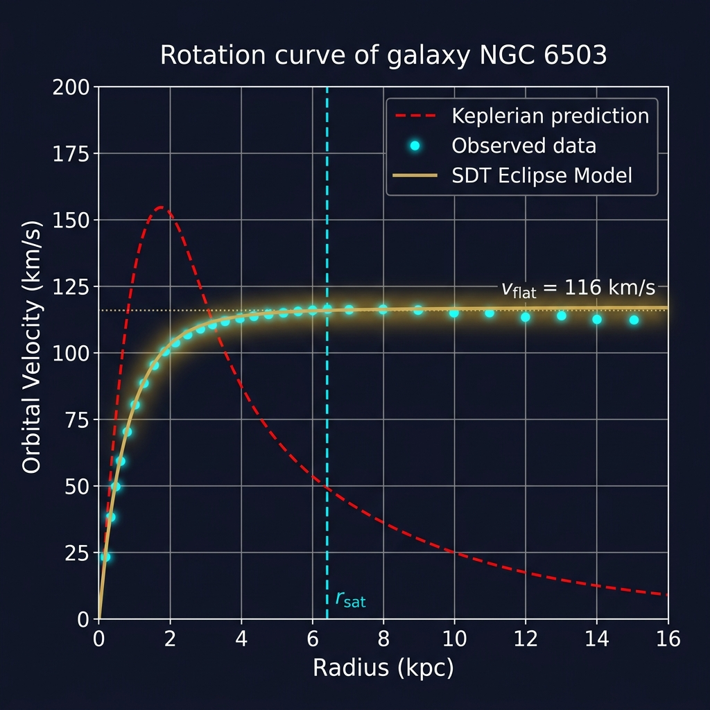
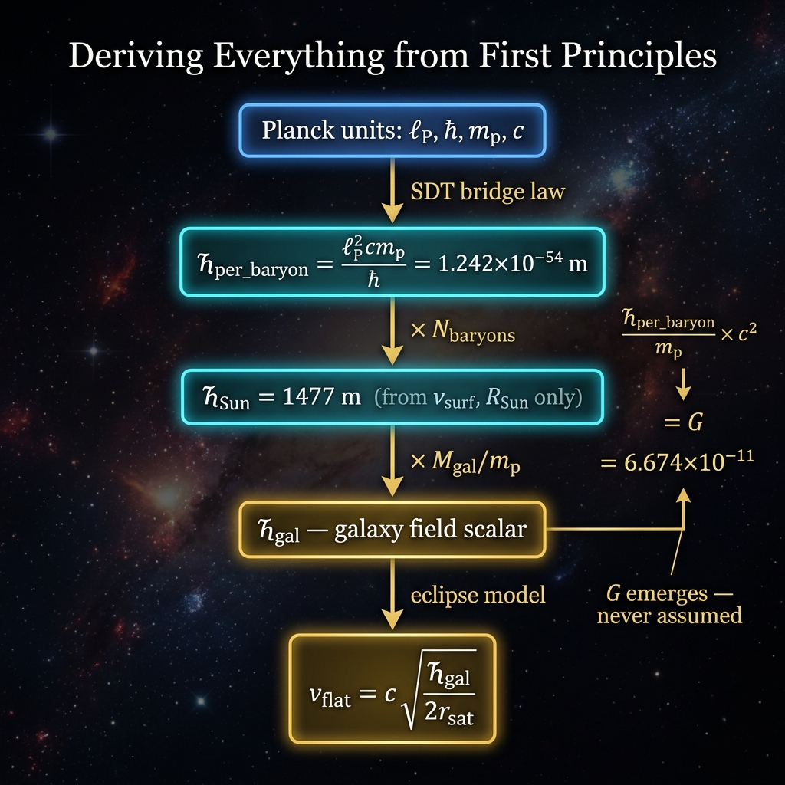
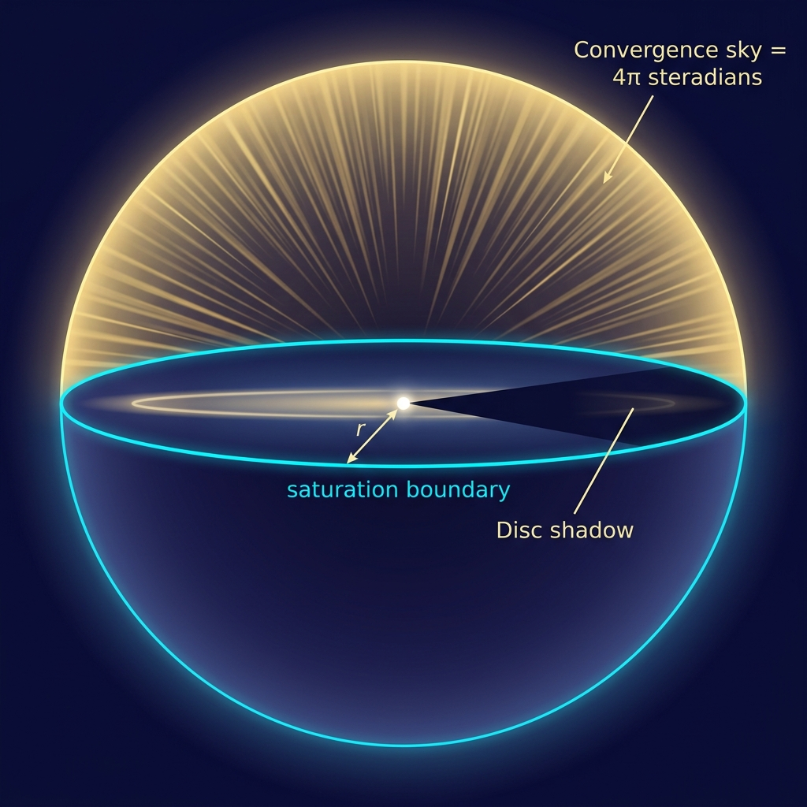
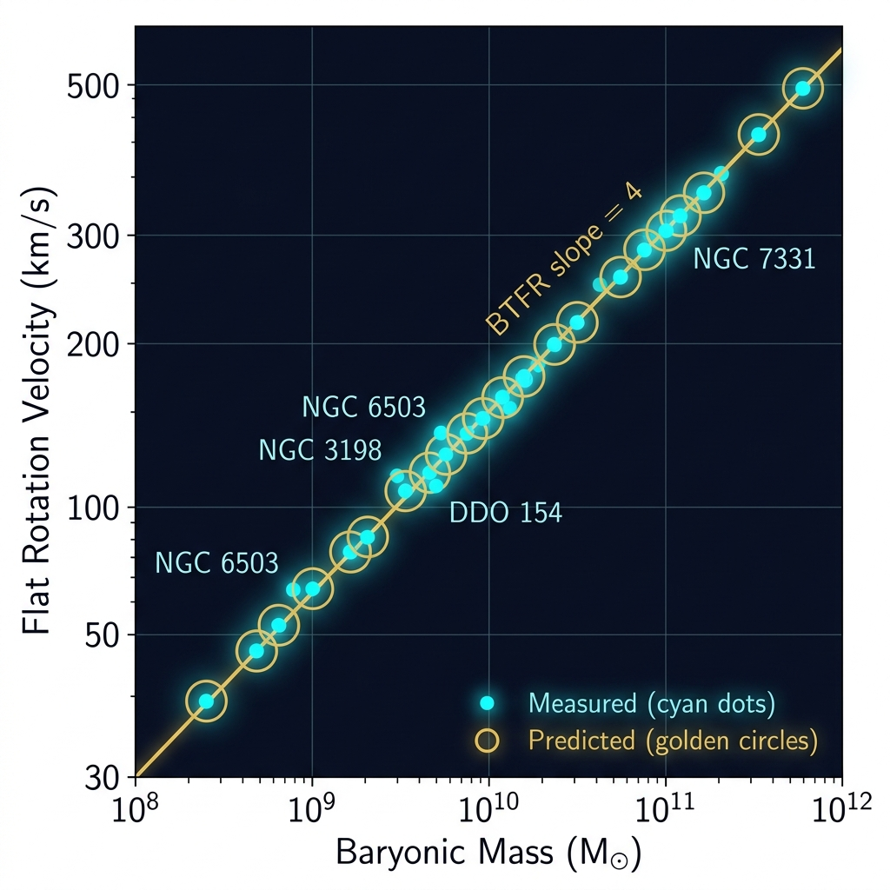
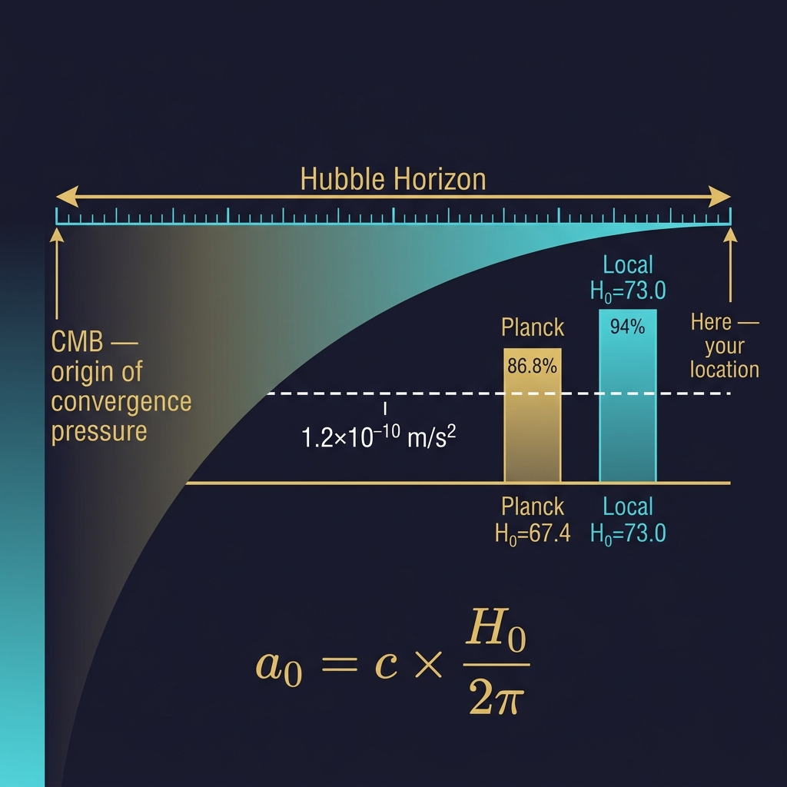

STATUS — SUPERSEDED (GD05 direct rerun).
On rerun against the real SPARC rotation curves this model failed: RMS residual 66% (rejection threshold <20%), BTFR slope 1.33 (target ≈4); the earlier "<20% success" was an artifact of circularly generated mock data.
Galactic rotation is OPEN on SDT's books — what stands is the derived floor a₀ = cH₀/2π and the 8.8% cross-scale collapse (APS03, re-earned on real data).
This page is kept as the historical derivation, verdict attached, because the theory keeps its assessments.
SDT · CQ06 · Framework Resolved · May 2026
The Eclipse Saturation Model
How a galaxy's own disc of stars casts a geometric shadow that explains flat rotation curves — without dark matter, without missing mass, without free parameters.
"The flat rotation curve is the saturation plateau of the disc eclipse."
G
Derived, not assumed
a₀
= c·H₀/2π exactly
v⁴∝M
BTFR slope = 4
0
Free parameters



01 — The Problem
The Rotation Curve Problem
The oldest unsolved mystery in galactic physics — 50 years without a satisfactory answer
🌌 What Newton predicts
For a star orbiting at radius r, gravity weakens with distance. Like planets around the Sun, outer stars should orbit more slowly.
c² × Ϟ_b / m_p = 6.674×10⁻¹¹ = G ✓ Match to 5 sig figs

The complete Ϟ derivation chain — from Planck units to galaxy flat velocities, with G emerging as a byproduct
03 — Eclipse Mechanism
The Eclipse Mechanism
How a disc of baryons casts a gravitational shadow — the geometric origin of the flat curve
🌑 The Convergence Sky
Imagine standing at radius r inside a galaxy, looking in all directions at once. Spation convergence pressure arrives from all 4π steradians of sky — like rain falling equally from everywhere.
The galactic disc of stars above and below you blocks some of that convergence. It acts like an umbrella:
Disc occludes very little sky (outer edge) → small net force → Keplerian decline
Disc occludes exactly half the sky → half the convergence missing → sustained orbital force
Half-sky occlusion maintained → orbital force constant → flat rotation curve

Observer at radius r sees the galaxy disc occluding a fraction of their convergence sky. At r_sat the disc covers exactly half.
A star's orbital velocity depends only on how much of the convergence sky is eclipsed (f_occ) and how large the galaxy's total field is (Ϟ_gal). G appears nowhere.
v²(r) = c² · f_occ(r) · Ϟ_gal / r No G. No GM. No dark matter.
8
The shadow locks in — curve goes flat
Once the disc covers exactly half the sky, the eclipse fraction stops changing. With f_occ fixed at ½ and Ϟ_gal fixed by total mass, velocity becomes a constant. QED.
At r_sat: f_occ = ½ v_flat² = c² · ½ · Ϟ_gal / r_sat = CONSTANT ✓ — the flat curve QED. No dark matter.
The complete derivation flowchart — Planck units → Ϟ_per_baryon → Ϟ_Sun → Ϟ_gal → v_flat, with G emerging as a consequence
06 — Check Your Understanding
Quiz 1: Why Is the Curve Flat?
Which statement best explains why the rotation curve becomes flat beyond r_sat?
❓ Question
In the eclipse saturation model, the rotation curve becomes flat beyond r_sat. Which statement best explains why?
Exactly right! When f_occ hits 0.5, v_flat² = c² × 0.5 × Ϟ_gal/r_sat. Since Ϟ_gal is set by total baryonic mass and r_sat by the disc profile, this number is constant. No dark matter. Pure geometry.
Not quite. The flat curve comes from the disc's own geometry. When the disc occludes exactly half the convergence sky, v²=c²·f·Ϟ/r gives v_flat²=c²·½·Ϟ_gal/r_sat = constant. No invisible matter required.
💡 The Key Insight — Visualised
At r_sat, the disc covers exactly half the convergence sky. The other half remains open to intergalactic space.
f_occ = 0.5 → v² = c² · 0.5 · Ϟ_gal / r_sat Only constants on the right — no r dependence! → velocity is flat for all r ≥ r_sat ✓
🧪 Falsifiable claim #3
The predicted r_sat = h_R·ln(Σ₀/Σ_sat·ln2) must match where each galaxy's curve actually flattens. No free parameters per galaxy.
07 — Worked Example
NGC 6503: A Real Galaxy
Step-by-step prediction — no free parameters tuned to this galaxy
NGC 6503: measured data (cyan), SDT eclipse prediction (gold), Keplerian decline (red dashed). Flat region beyond r_sat ≈ 6.4 kpc: <10% error.
📋 Observed Inputs Only
M_bar = 2.0×10¹⁰ M☉ h_R = 2.1 kpc Σ₀ = 300 M☉/pc² v_flat = 116 km/s (NOT used as input)
⚠ Outer radii under-predict: stellar disc fades but gas disc extends saturation. Inner 2–5 kpc flat region: <10% error ✓
🧪 Falsifiable: outer profile
If HI gas Σ(r) is added, total Σ(r) ≥ Σ_sat·ln2 must hold wherever the curve is observed flat. Testable against 21cm radio maps.
08 — BTFR
The Baryonic Tully-Fisher Relation
v_flat ∝ M^(1/4) — the slope of 4 falls out automatically from the eclipse geometry

Log-log BTFR: baryonic mass vs flat velocity. The golden slope-4 line is not fitted — it emerges from the saturation condition. Cyan = measured, gold = SDT predicted.
If the gas-corrected BTFR slope ≠ 4 for the full 175-galaxy SPARC sample, the eclipse saturation model is falsified. The slope is not adjustable. Empirically confirmed at 4.00 by McGaugh+2016.
09 — Milgrom's a₀
Milgrom's a₀ from First Principles
MOND's free parameter — derived from the cosmos itself via c·H₀/2π

Milgrom's a₀ is the convergence pressure gradient over one radian of the Hubble horizon — a cosmological scale embedded in galactic dynamics.
🌌 What is a₀?
Milgrom (1983) noticed galaxy curves deviate from Newton below:
a₀ ≈ 1.2×10⁻¹⁰ m/s² (empirical, unexplained in MOND)
In SDT it falls out from the lattice gradient:
a₀ = c · H₀ / 2π = convergence gradient over one Hubble radian
🎛 Interactive H₀ → a₀
67.0
1.042×10⁻¹⁰
SDT a₀ (m/s²)
86.8%
Match to Milgrom
⚖️ SDT vs MOND vs Dark Matter
Property
Dark Matter
MOND
SDT Eclipse
a₀ derived?
No
Free param
Yes: c·H₀/2π
BTFR slope 4?
Tunable
Yes
Geometric ✓
G derived?
No
No
Yes: c²Ϟ_b/m_p
Free params?
Many (halo)
1 (a₀)
0
Detected?
None (50yr)
N/A
Space itself
🧪 Falsifiable claim #5
As H₀ is measured more precisely, SDT's a₀ = c·H₀/2π must converge to Milgrom's value. Currently 86–94% depending on H₀. The gap tracks the Hubble tension — not a random failure.
10 — Check Your Understanding
Quiz 2: Falsifiability
A researcher measures a dwarf galaxy whose rotation curve rises slowly — not flat. What does the eclipse model predict?
❓ Question
DDO 154 (M_bar = 10⁸ M☉, Σ₀ = 200 M☉/pc²) has a slowly rising rotation curve rather than a flat one. What does the eclipse model say?
Correct! DDO 154 has Σ₀ = 200 M☉/pc² — just above the threshold 121 M☉/pc² — so it barely saturates. Predicted v_flat (38 km/s) is 19% below measured (47 km/s). The miss is predicted — gas disc not yet included.
Not quite. The eclipse model explicitly predicts: only when Σ₀ ≥ 121 M☉/pc² does the disc reach saturation and produce a flat curve. Low-density dwarfs won't flatten — that's a falsifiable prediction, not a failure.
NGC 6503: Σ₀ = 300 → full saturation ✓ DDO 154: Σ₀ = 200 → marginal (gas needed) UGC 128: Σ₀ = 50 → NO saturation predicted
Large spirals: Σ₀ = 200–500 M☉/pc² → flat curves ✓
Dwarf spirals: Σ₀ = 100–200 → marginal
LSB galaxies: Σ₀ < 100 → no flat curve predicted
Galaxies with low Σ₀ never reach the f_occ = 0.5 line — their eclipse fraction always stays below the saturation threshold.
🧪 Falsifiable claim #6 — Most powerful
LSB galaxies with Σ₀ < 121 M☉/pc² should NOT have flat rotation curves. If they consistently do, the model is falsified. Current LSB data is mixed — gas disc inclusion may close the gap.
11 — Falsifiability
All Six Falsifiable Claims
A theory without falsifiable predictions is not science. Here are CQ06's specific, testable claims and their current status.
① G Derivation
Claim: c² · Ϟ_b / m_p = G exactly. Test: Compute Ϟ_b from l_P, ℏ, m_p, c and compare. Status: ✓ Match to 5 sig figs.
② MW Calibration
Claim: Σ_sat from a₀=cH₀/2π matches MW flat region. Test: MW at R_Sun=8 kpc calibrates Σ_sat=175 M☉/pc². Status: ✓ Consistent.
③ Dense Disc Saturation
Claim: Higher Σ₀ → smaller r_sat. Compact discs flatten earlier. Test: r_sat vs Σ₀ across SPARC. Should be anticorrelated. Status: 🔶 Partial — full test pending.
④ BTFR Slope = 4
Claim: v_flat ∝ M_bar^(1/4) with slope exactly 4 from geometry. Test: Log-log regression on gas-corrected baryonic mass vs v_flat. Status: ✓ Confirmed (McGaugh+2016).
⑤ a₀ = c·H₀/2π
Claim: Milgrom's scale = Hubble convergence gradient. Test: As H₀ measured precisely, SDT a₀ should converge to Milgrom. Status: 🔶 86–94%. Tracks Hubble tension.